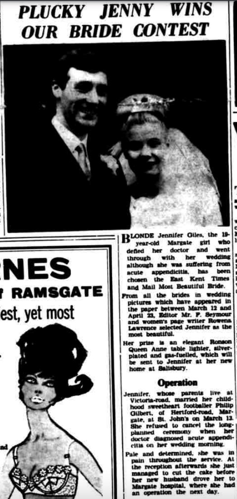
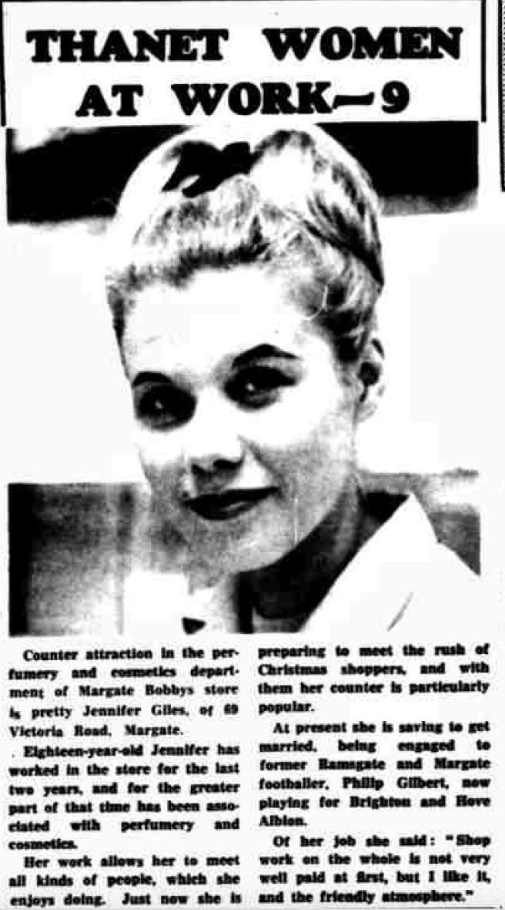
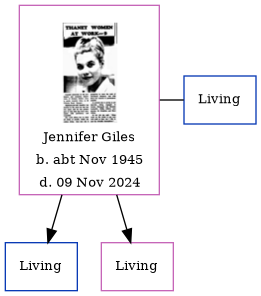

Jennifer Ann Gilbert (née Giles) cNov 1945 - 2024
[ Home ] | [ Calendar ] | [ Surnames Index ] | [ Family History ]Jennifer Giles, the wife of Philip Leonard Gilbert (the cousin on the mother's side of Nigel Horne), was born in Thanet, Kent, England c. Nov 19451. She married Philip (a football player with whom she had 2 surviving children Craig and Claire) in Thanet around Feb 19652. In 1963, she lived on 69 Victoria Road, Margate, Kent, England.
She died on Nov 9, 2024 in Thanet.
Citations
- England & Wales births 1837-2006 - Findmypast
- England & Wales Marriages 1837-2005 - Findmypast
Media
East Kent Times and Mail - 23 Apr 1965

Thanet Times November 19, 1963

England & Wales marriages 1837-2008 - BMD/M/1965/1/AZ/000440/013
England & Wales births 1837-2006 - BMD/B/1945/4/AZ/000457/062
Family Tree
Generated by Ged2Site. Last updated on Jul 20, 2025